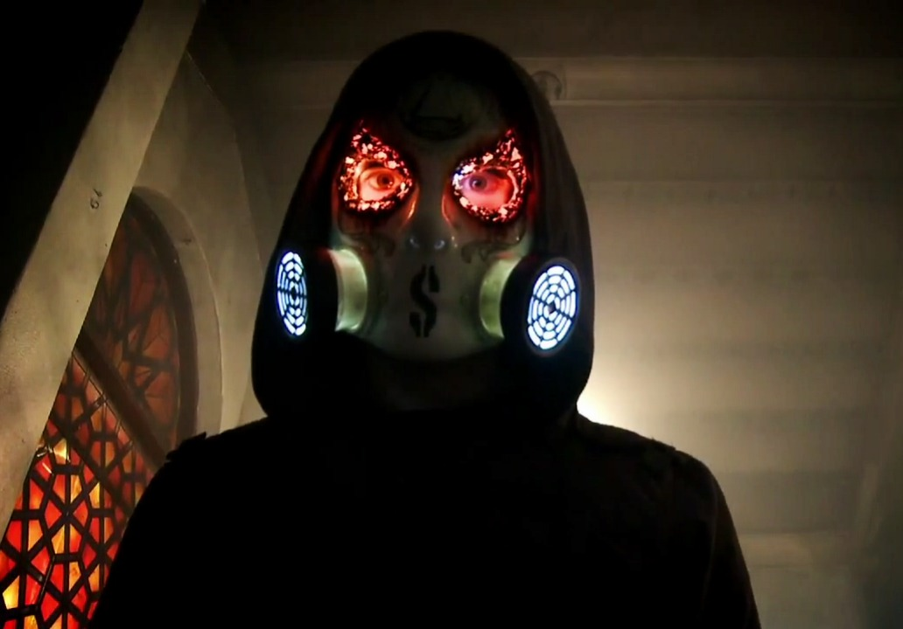

Jorel « J-Dog » Decker – chant, guitare, basse, claviers, synthétiseur, programmation (depuis 2005)
Matthew « Da Kurlzz » St. Claire – chant, batterie électronique, percussions (depuis 2005)
Dylan « Funny Man » Alvarez – chant (depuis 2005)
George « Johnny 3 Tears » Ragan – chant (depuis 2005), basse (depuis 2013)
Jordon « Charlie Scene » Terrell – chant, guitare (depuis 2005)
Daniel « Danny » Murillo – chant (depuis 2009), claviers (depuis 2011), guitare (depuis 2013)